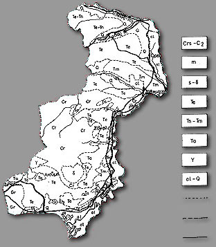

Kύριος παράγων στο σχηματισμό και στη διαμόρφωση του δέλτα ήταν και εξακολουθεί να είναι ο ποταμός `Εβρος.
Ένας από τους μεγαλύτερους ποταμούς της Βαλκανικής χερσονήσου χαρακτηρίζεται από μεγάλο όγκο υδάτων ιδίως τους χειμερινούς μήνες. Αυτό οφείλεται στο ότι ο ποταμός Έβρος και οι παραπόταμοί του Ερυθροπόταμος, Αρδας, Τούντζας, Εργίνης αποχετεύουν μεγάλη έκταση που περιλαμβάνει την Ανατολική Θράκη και τη Νοτιανατολική Βουλγαρία.
Στη δυτική περιοχή του δέλτα καταλήγει ο χείμαρρος του Λουτρού αλλά μόνο την περίοδο των βροχοπτώσεων έχει νερά.Το καλοκαίρι ξεραίνεται. `Ετσι δεν επηρεάζει την μορφολογία της περιοχής σε αντίθεση με τον ποταμό Έβρο ο οποίος με τα άφθονα νερά και τις προσχώσεις δημιουργεί στις ακτές νέες καταστάσεις.
Παλαιότερα, πριν τις δεκαετίες του 1950, η εισροή των γλυκών νερών του ποταμού στο δέλτα ήταν αφθονώτερη και γινόταν ανεμπόδιστα. Σήμερα με τα φράγματα που υπάρχουν στους παραποτάμους του ποταμού `Εβρου γίνεται κατακράτηση μεγάλων ποσοτήτων των νερών του καθώς και φερτών υλών, τα αντιπλημμυρικά έργα περιόρισαν την ελεύθερη εισροή των νερών σ`όλη την έκταση του δέλτα ενώ τα αποστραγγιστικά - αρδευτικά κανάλια και τα αντλιοστάσια διοχετεύουν μεγάλες ποσότητες γλυκών νερών κατά την περίοδο των πλημμυρών κατευθείαν στη θάλασσα. Η σκανδαλώδης παρέμβαση του ανθρώπου με την ανάπτυξη και κατασκευή μεγάλου πλάτους καναλιών, έφερε σε άμεση επικοινωνία τη θάλασσα με τις άλλοτε ζωτικής σημασίας συγκεντρώσεις γλυκού νερού, λίμνες γλυκού νερού, με αποτέλεσμα την αισθητή πτώση ή και εξαφάνιση λιμνών του 1945. Αυτές οι δραστηριότητες οδήγησαν στην πτώση της στάθμης των υπογείων και επιφανειακών νερών, την είσοδο της θάλασσας διαμέσου των καναλιών, της ευθυγράμμισης (τεχνητό κανάλι στον ανατολικό βραχίονα του ποταμού το οποίο κατασκευάστηκε στη δεκαετία του 1950 για να επιτευχθεί η αποστράγγιση των βορείων περιοχών και να αποδοθούν στη καλλιέργεια ) και της κοίτης του ποταμού σε αρκετά χιλιόμετρα μέσα στο δέλτα αυξάνοντας έτσι την αλατότητα στα νερά και στο έδαφος ιδιαίτερα τους καλοκαιρινούς μήνες.
Υδρολιθολογικές ενότητες
που απαντώνται κατά μήκος του ποταμού Έβρου
(από Διαμάντη, 1987 με τροποποιήσεις)
Γενικός Γεωλογικός Χάρτης Νομού Έβρου
Κλίμακα 1 : 500.000
